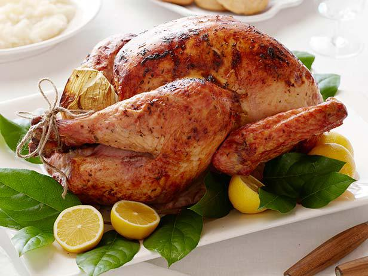

Oven Roasted Turkey

The Turkey on Thanksgiving Day
Turkey meat, commonly referred to as just turkey, is the meat from turkeys.
It is traditionally consumed as part of culturally significant events, such as Thanksgiving and Christmas.
Ingredients
- 1 (18 lbs) whole turkey
- 1/2 cup unsalted butter, softened
- salt and freshly ground black pepper to taste
- 1 1/2 quarts turkey stock
- 8 cups prepared stuffing
Steps
- Preheat oven to 325 degrees F. Place rack in the lowest position of the oven.
- Remove the turkey neck and giblets, rinse the turkey, and pat dry with paper towels. Place the turkey, breast side up, on a rack in the roasting pan. Loosely fill the body cavity with stuffing. Rub the skin with the softened butter, and season with salt and pepper. Position an aluminum foil tent over the turkey.
- Place turkey in the oven, and pour 2 cups turkey stock into the bottom of the roasting pan. Baste all over every 30 minutes with the juices on the bottom of the pan. Whenever the drippings evaporate, add stock to moisten them, about 1 to 2 cups at a time. Remove aluminum foil after 2 1/2 hours. Roast until a meat thermometer inserted in the meaty part of the thigh reads 165 degrees F (75 degrees C), about 4 hours.
- Transfer the turkey to a large serving platter, and let it stand for at least 20 to 30 minutes before carving.